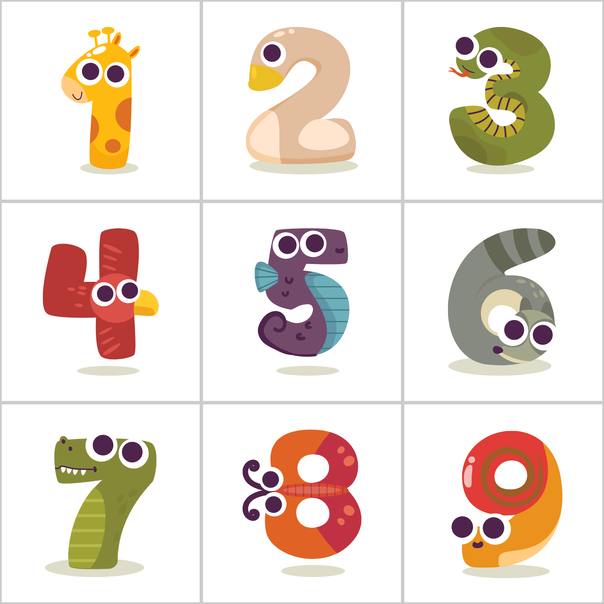

Last Updated: May 14, 2026
Sudoku Animals ("we," "our," or "us") is committed to protecting your privacy, especially since our app is designed for users of all ages, including children. This Privacy Policy explains how we handle information when you use our mobile application.
1.1 Personal Data: Sudoku Animals collects a Display Name and Profile Icon chosen by you to personalize your gaming experience. We do not collect your real name, email address, or phone number. No account creation is required.
1.2 Gameplay Data: Your gameplay progress, including your current level, unlocked animal stickers, "Mastery Mode" achievements, and saved games, is stored locally on your device and synced to our secure cloud database (Firebase Firestore).
We use a unique device identifier to sync your data. This allows you to recover your progress if you reinstall the app or switch devices. This identifier is used solely for technical synchronization and is not linked to your personal identity.
1.3 Technical and Usage Data: When you use our app, we or our third-party partners (such as Firebase) may collect certain non-personal information automatically, including device type, operating system version, unique identifiers (e.g., IDFA or AAID), and general usage statistics. This is used solely to improve app performance.
Our app offers premium features, such as "Remove Ads" and "Unlimited Hints," through subscriptions. Payment Processing: All financial transactions are handled by the Apple App Store or Google Play Store. We do not collect or store your billing information. We may store an anonymized transaction ID to verify your premium status.
To keep the basic version free, we may display third-party advertisements. These partners may use cookies to serve ads based on your interests. You can opt-out of personalized advertising through your device settings. We strive to ensure that all ads are appropriate for all ages.
Photo Library / Storage Access: We request permission to save "Animal Sticker" rewards and "Completion Certificates" to your device's gallery. We only access your storage to write these specific files at your request.
Sharing Features: When you use the "Share" button, it is handled through your device's native sharing interface. We do not track who you share with.
We use professional third-party services to enhance your experience:
Sudoku Animals is a family-friendly app. We comply with the Children's Online Privacy Protection Act (COPPA). We do not knowingly collect personal data from children. If you believe we have inadvertently collected such data, please contact us.
Since most data is stored locally, it is deleted if you uninstall the app. If you use the "Start Fresh" feature, your local progress will be reset.
If you have any questions or concerns regarding your privacy, please contact the developer directly at vincemavill@gmail.com or through the official App Store or Google Play Store listing support channels.